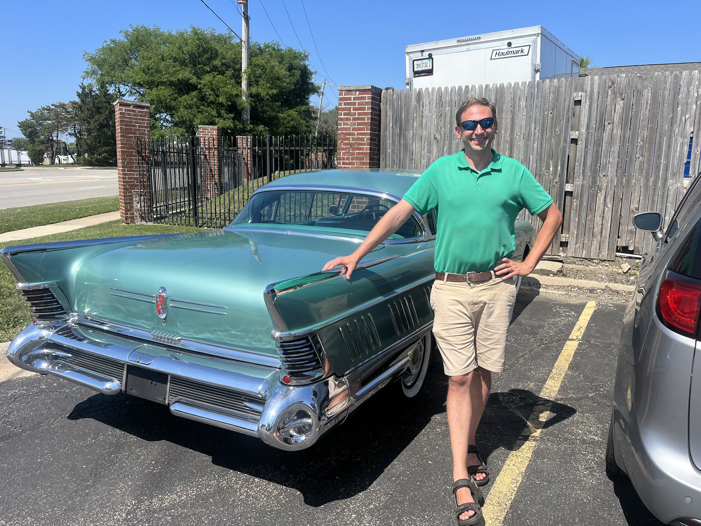

American Classic Export Services
About

An American classic is more than a car—it’s a piece of American history and automotive art. I’ve loved classic cars for as long as I can remember.
I have always loved American Classic Cars. I learned to drive on a 1973 Camaro RS and had my first convertible (1965 Corvair) when I was 23. I have owned many classic cars over the years and have sold many to European buyers. My hobby has evolved into a business helping people all over the world find their own classic cars to enjoy. Outside of the classic-car business, I’m a husband, father and high-school teacher living with my family near Chicago, Illinois. My Christian faith is an important part of who I am and how I conduct my business.
I have experience with pre-1995 cars, trucks and vans and am very knowledgeable in the field. I know what to look for in cars and I know how to find them for the right price and get a deal done with sellers. I have bought and transported hundreds of cars from all over the USA. I have worked with buyers in Sweden, Demark, France, Germany, The Netherlands, Spain, Norway, the UK, Poland and even Australia! I also have dealer partners in several European countries.